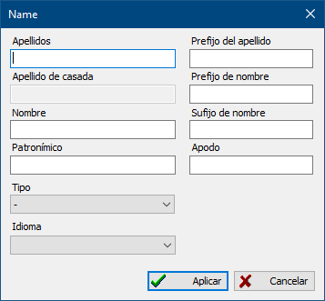

Los nombres están destinados a almacenar en registros personales todos los nombres de persona, con distinta exhaustividad de indicación de partes, en distintas lenguas, de distintos tipos.
Los nombres se añaden en la pestaña del mismo nombre del cuadro de diálogo de edición del registro de personas.

Al pulsar las teclas [ Ctrl + Abajo ] en los campos para introducir el apellido, apellido de casada, nombre y patronímico - se produce la «unificación» de la línea correspondiente, las primeras letras de las palabras se convierten en mayúsculas, el resto - minúsculas.
Atención: está prohibido utilizar el símbolo «/» en los campos de nombre (apellido, nombre, patronímico), ya que puede dar lugar a errores en la base de datos.
Vea también: Registro de personas, Culturas lingüísticas.